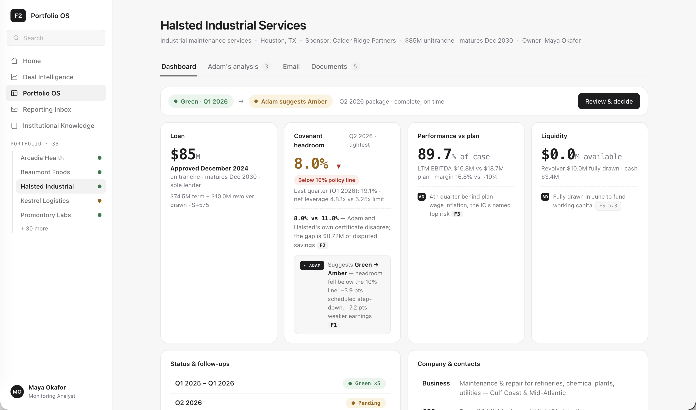
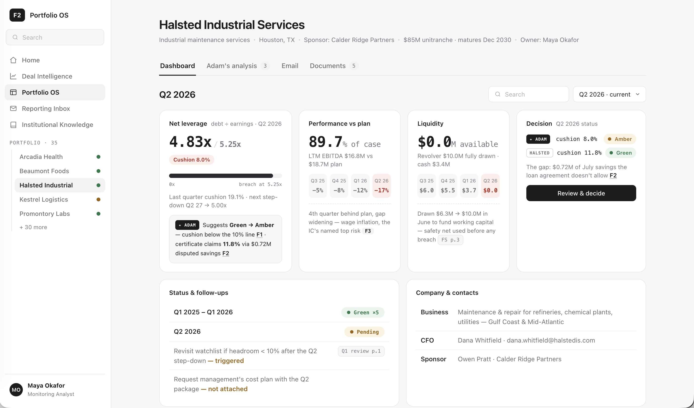
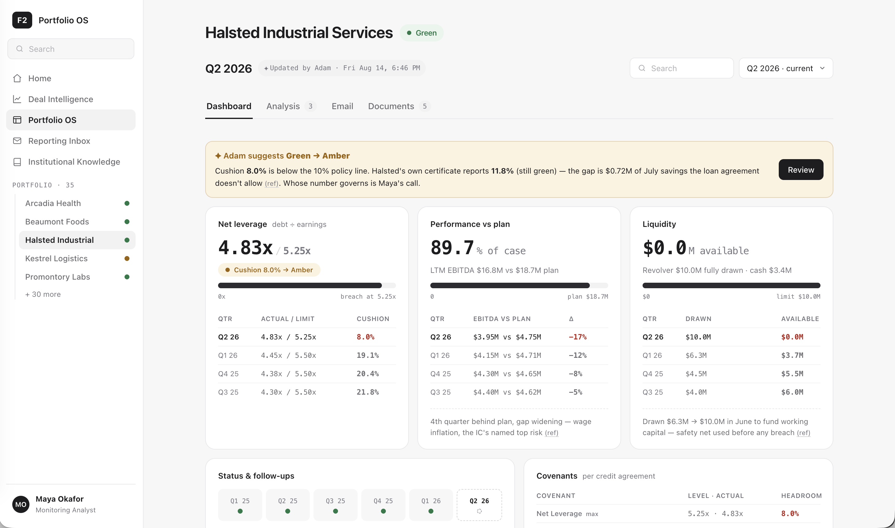

In Plain Terms
A lending fund lends money to a company. The loan comes with rules, called covenants. The main one in this case: the company's debt can't be more than a set multiple of its yearly earnings. Every quarter, the company sends the fund a report card: its financial statements, a short commentary, and a signed certificate saying whether it followed the rules. An analyst at the fund reads it, checks the math, and decides whether the company is getting riskier.
Case Context
Private credit funds use F2 to underwrite deals and, once a deal closes, to monitor it until it is repaid. Monitoring happens in Portfolio OS, where every borrower has a portfolio company workspace: its loan terms, its covenants, and the plan the deal was approved on.
Today an analyst opens every PDF, retypes the numbers into a tracker, usually an Excel file, recalculates the ratios, compares them with last quarter by eye, and decides whether the borrower's health has changed. At 35 borrowers, that is most of their quarter.
In Portfolio OS the analyst forwards the email to Adam, F2's AI agent. Adam files the package into the right workspace and does the first pass. It pulls out the numbers, redoes each covenant using the loan agreement's own definitions, checks its result against the borrower's certificate, and compares performance with the plan and with last quarter. Combined with a health status for each borrower based on the firm's internal risk guidelines, we call this layer Risk Intelligence.
Filing a PDF against the right company is what a CRM does. F2 holds much more: the investment committee memo the deal was approved on, the loan agreement, every prior quarter, and the analyst's own notes. This case asks what that makes possible the moment a new package arrives.
Your Objective
Design what the analyst sees and does once one borrower's quarterly package is in F2, from the moment she learns it's ready to the moment she has made her decision. That covers two parts:
The workspace.
This is the heart of the case. What the analyst sees when she opens the borrower's workspace after Adam's first pass: what changed, why, and how it connects to the plan and the borrower's history.
The decision.
Adam suggests a new health status. The analyst confirms or overrides it, with a reason, and takes whatever follow-up that decision calls for.
Intake is already handled. The email was forwarded to Adam, and Adam filed the package in Halsted's workspace. You only need to show how Maya finds out it's ready: a single notification or entry point is enough.
The bar: the analyst opens the workspace and, within a minute, knows what changed this quarter, why, whether she agrees with Adam, and what to do next.
The Scenario
Maya is a monitoring analyst at Northgate Credit Partners, a direct lending fund. She covers 35 borrowers. This case is about one: Halsted Industrial Services, which maintains refineries and chemical plants. Northgate lent Halsted $85M in December 2024. The deal was approved in F2, so Halsted's workspace already holds the investment committee memo, the loan agreement, five quarters of history, and Maya's review from last quarter.
On Friday, August 14, Halsted's CFO emailed the Q2 2026 package to the fund's shared reporting inbox, which forwards everything to Adam at adam@northgate.f2.ai. It had the financial statements, management commentary, and the signed compliance certificate. It is now Tuesday, August 18, 8:15 am, and Adam has finished its first pass.
What Adam found
- Halsted's cushion under the debt limit shrank from 19% to 8%. Northgate's policy treats anything under 10% as amber. About 4 points of the drop is because the limit tightened on schedule, from 5.50x to 5.25x. The other 7 are because Halsted earned less.
- Halsted's own numbers disagree with Adam's. Halsted's signed certificate reports a cushion of 11.8%, which would keep it green. The difference is $0.72M of savings from a cost program that started in July, after the quarter ended. Halsted counts those savings. The loan agreement doesn't allow them, so Adam leaves them out. Whether Halsted is green or amber depends on whose number Maya accepts.
- Halsted has missed the plan the deal was approved on for four quarters running. Revenue is 6% below plan, and profit margin is 16.8% against about 19% planned. When the deal was approved, the investment committee named wage inflation as the top risk; that is what management blames now.
Adam suggests moving Halsted from green to amber. Maya decides.
How the cushion is worked out, and where the two numbers split:
| Last quarter | This quarter |
|---|
| Debt limit | 5.50x | 5.25x |
| Halsted's debt ÷ earnings, per Adam | 4.45x | 4.83x |
| Halsted's debt ÷ earnings, per Halsted's certificate | 4.45x | 4.63x |
| Cushion, per Adam | 19.1% | 8.0% |
| Cushion, per Halsted | 19.1% | 11.8% |
Cushion = (limit − debt ÷ earnings) ÷ limit.
There is more in the data pack than these three findings. You don't need it, but it is there if you want to go further.
Key Questions to Consider
- How does Maya find out the package is ready, and what does that first moment already tell her?
- When Maya opens Halsted's workspace, what does she see first?
- What is the difference between showing this quarter's numbers and showing what they mean?
- When Adam and the borrower disagree, how does that land?
- What does Maya need to see before she agrees with Adam's suggestion, or overrides it?
- What would this workspace look like in a quarter where nothing changed?
Constraints & Assumptions
Adam does the analysis.
You are not designing spreading tables, formulas, or Excel. Assume extraction and calculation work; the data pack shows their output.
The workspace exists.
Halsted's workspace already holds its investment committee memo, the plan the deal was approved on, its covenants and scheduled step-downs, and its history.
Adam proposes, Maya decides.
Health status (red / amber / green) comes from the fund's credit policy, which is in the data pack. Adam suggests a status. Confirming or overriding it is Maya's call and needs a recorded reason.
Everything traces to source.
Any number or claim Adam makes must link back to the document and page it came from.
Follow-ups belong to the decision.
Alongside the status, Maya might add Halsted to the watchlist, ask the borrower a question, or flag it for the investment committee. Design these as part of the decision, not as separate features.
Out of scope:
intake and filing, views across all 35 borrowers, late or incomplete packages, news monitoring, and loan amendments.
Deliverables
- User needs and pain points - single slide. What Maya is trying to see and get done when a package arrives.
- A prototype/Figma file of the workspace Maya sees when she opens Halsted this morning, including how she confirms or overrides Adam's suggested status. Use any tool; AI tools are welcome. Build it on the data pack.
Focus on clarity of thinking over polish. This problem is deliberately open, and there is no single right answer. We care most about how you think, what you prioritize, and how you design for real credit decisions.
What We Provide
A data pack (zip). All companies, people, and numbers are fictional. The folders follow the story in order, and START_HERE.md says which data to use for what. For the prototype you need folders 2, 3, and 4. Folder 1 is background.
| Folder | Use it for | What's inside |
|---|
1_the_email/ | Background: how the package arrived | The email Halsted's CFO sent, and the two PDFs attached to it. You don't need to design this step. |
2_workspace_before_this_quarter/ | The workspace as it stood before today | Loan terms, the debt limit and its schedule, the plan the deal was approved on, five past quarters, and the current status (green). Also the investment committee memo, the loan agreement, and Maya's review from last quarter. |
3_what_adam_found/ | What's new this quarter | Adam's three findings and suggested status, with the numbers behind each and the file and page every number came from |
4_fund_rules/ | The decision | When a borrower is green, amber, or red, and what Maya must record when she changes a status |
We will also share screenshots of today's Deal Intelligence module and a portfolio company workspace for visual context. Use as much or as little of the current UI as you like.
Presentation
- Prep time: we expect ~3 hours.
- Submission: send your work at least 24 hours before the session.
- Session: 45 minutes. Spend about 30 walking us through your thinking and demoing the prototype; the last 15 are for follow-up questions and your questions for us.
- Format: the session is conversational. Expect us to ask questions as you go.
- Tools: use whatever you like, including AI tools. Tell us what you used and how.
AI Process Log · Tools: Claude Code
Prompts
Every prompt given to the AI for this case study, in order — the "tell us what you used and how" record.
01Understand the brief
Prompt 1
cheking the F2 folder, read PDF and create a html, chinese version for me, make an overview for ask/delivery, and detail page
→ AI read the 5-page case study PDF + data pack START_HERE.md; produced this page's 總覽 and 詳細內容 tabs.
Prompt 2
也加一頁附上英文
→ Added an English tab.
Prompt 3
原文
→ Correction mid-task: the English tab should carry the brief verbatim, not a rewrite. Replaced with the original text.
02Define the user (Deliverable 1)
Prompt 4
add a slide for user needs call "User"
part 1 Who
part 2 Scenario and Goals
Part 3 JTBD (Review > Confirm > Take Action??)
part 4 Design exploration
→ AI drafted the User tab from the case data: Maya's profile, goals vs pains, the three-stage journey, four design principles.
Prompt 5 · critique request
Jobs To Be Done — Review → Confirm → Take Action >> you think this is corect?
→ AI's assessment: "Confirm" presumes agreeing with the AI (automation bias); the brief says confirm or override. Also flagged that the sequence should start at the notification moment. Recommended Review → Decide → Act.
Prompt 6
ok
→ Applied the rename; folded the notification into Review; made confirm/override equal-weight in Decide.
03Build the prototype (Deliverable 2)
Prompt 7
ok now, leverage mu-system, building a tool to support this journey. consider
1. this is a Portfolio Monitoring tool, so on left bar we might have a few tool, you can mock up it
2. we only show the page for "Halsted", make it the index.html
3. give me the first version including overview of Halsted, analysis, a few tab to check analysis or email; leverage data from other folder
(also create a page in …/case-study-zh.html#detail to document all prompts I gave you )
→ AI read all four data-pack folders (workspace.json, adam_first_pass.json, credit_policy.json, email.json), copied the personal mu-system design library into the project, and built index.html: Portfolio OS left rail, notification entry point, Halsted workspace with Overview / Adam's analysis / Email / Documents tabs, headroom bridge, certificate-dispute comparison, and the Review → Decide → Act decision modal with recorded reason + follow-ups. Every figure links to its source PDF page. Also added this Prompts tab.
04Iterate the prototype
Prompt 8
ok let's continue to fix index.html
1. remove this on top Portfolio OS / Portfolio companies / Halsted Industrial Services
2. remove settings on nav, remove notification and ask Adam on top
3. show [company name + meta] and then show tab
4. remove Green · as of Q1 2026 → Adam suggests Amber
5. remove Adam · first pass finished… to overview, I want to incorporate this into overview
6. 8.0% $16.8M $10.0M drawn make data bigger, and show what Adam found (like 8.0% vs 11.8%)
7. Halsted's cushion under the debt limit shrank from 19% to 8% how do we show this?
8. Email should also be a list, there might have multiple email
9. think about how do we show Halsted's analysis vs. Adam's. and what to surface top
→ Stripped the chrome (breadcrumb, bell, Ask Adam, Settings, status badges in header); header now flows straight into tabs. Adam's first pass became the opening card of Overview with the Green→Amber suggestion inside it. Stat numbers enlarged; new cards lead with 19.1% → 8.0% (with a 4-quarter mini sparkline) and 8.0% vs 11.8% (Adam vs certificate — "Maya's call"). Email tab became an inbox list (Q2 expanded with attachments + filing evidence; Q1 2026 / Q4 2025 collapsed rows showing "certificate matched, kept Green"). The dispute is surfaced three times at increasing depth: stat card → covenant-table certificate row → full F2 side-by-side in Analysis.
Prompt 9
1. I don't want to see this card on top: Adam · first pass finished… this is too much to read
2. think about what are cards that contain most important data, that always show on dashboard, AND we should incorporate Adam's feedback there instead of creating another card
3. Consider what are key data to show for Maya to review time to time
4. keep screen simple, now it's too cluttered and overwhelm
→ Reframed Overview as a steady-state dashboard: one slim decision bar (Green → Adam suggests Amber · Review & decide), then three always-on cards — Covenant headroom, Performance vs plan, Liquidity — each with a 4-quarter sparkline and a dashed "AD" annotation carrying Adam's finding (F1/F2/F3 links) inside the card it belongs to. Removed the hero card, the redundant headroom chart, and merged status history + follow-ups + contacts into two compact reference panels.
Prompt 10
Overview >> Dashboard, Email default collapse all items
→ Renamed the tab to Dashboard; email list now opens fully collapsed.
Prompt 11
Let's update the cards first
1. Debt $85M Lent, approved in December 2024 might be important to highlight
2. Headroom 8.0% (we can show down icon + warning red tag), we don't need 19.1% → 8.0%; clarify which quarter, show 19% below; show AD suggestion in a format that makes the AI suggestion obvious
3. for all 3 cards with charts, remove the charts
4. the Headroom card content should be "8.0% vs 11.8% — Adam 與 Halsted 證明書不一致，差在 $0.72M 爭議性節省"
→ Added a Loan card ($85M, "Approved December 2024" bolded). Headroom card now leads with 8.0% + red ▼ + "Below 10% policy line" tag, dated Q2 2026 in the card title with "Last quarter (Q1 2026): 19.1%" beneath; its body is the 8.0% vs 11.8% certificate dispute; Adam's proposal sits in a new ✦ ADAM suggestion block (dark mono tag, boxed) distinct from plain data. All sparkline charts removed.
Prompts 12–17 · design dialogue
「why we need to show Performance vs plan / Liquidity? explain, don't change yet」
「第一張卡應該展示收益/負債．本益比?（固定倍數是多少？）」
「數字越大代表？」
「為啥有三種數字」
「so that's the policy change? the rule is they cannot exceed that number?」
「critical data: 1 loan 2 debt÷earnings (term?) 3 headroom 4 連續四季未達標 — loan critical? 2 and 3 repeating?」
「ok show me」
→ A Q&A loop before touching the UI: AI explained why performance-vs-plan and liquidity are standing monitors (policy input + survival signal), the term net leverage ratio and its direction (bigger = worse; headroom opposite), the three-number table (rule / referee's measure / player's claim), and step-down-vs-policy. Verdicts agreed: leverage + headroom = one fact, two layers → one card; Loan is static and already in the header → demoted. Final set: Net leverage (4.83x / 5.25x with ceiling bar, cushion tag, dispute, ✦ ADAM), Performance vs plan (89.7% + widening miss sequence −5/−8/−12/−17%), Liquidity ($0 available).
Prompt 18
for Dashboard, we need a way to switch view to different time? like now it's Q2 2026, Q1 2026..etc
→ Added a Period segmented control (Q3 25 / Q4 25 / Q1 26 / Q2 26·current) using mu-system's .tabs component. Past quarters re-render all three cards from workspace.json history (leverage vs that quarter's 5.50x limit, % of case, revolver drawn) with green cushion tags, hide Adam's annotations and the decision bar, and show the recorded status instead (e.g. Q1 26: Maya's May 20 reason verbatim) — which doubles as the "quiet quarter" answer.
Prompt 19
Cushion 8.0% · below 10% policy line >> Cushion 8.0%
limit 5.25x can be same style?
we don't need this Q1 26 · 4.45x ↑
so this bar we should emphase cushion 8%, how can you improve it
→ Tag shortened to "Cushion 8.0%"; 5.25x now renders in the same big mono type as 4.83x (grey, "4.83x / 5.25x"); prior-quarter tick removed. Bar inverted to emphasize the cushion: the used portion is neutral grey, the remaining 8% is the colored sliver (amber now, green in past quarters) — the eye reads "how little is left" instead of "how much is used."
Prompt 20
can we combine into one banner and make it short. also there should be no gap for 2nd/3rd row when it's wrapping (dispute line + ✦ ADAM block)
→ Merged into one ✦ ADAM banner: "Suggests Green → Amber — cushion below the 10% line F1 · certificate claims 11.8% via $0.72M disputed savings F2". Layout switched from flex (hanging indent) to inline-block flow, so wrapped lines run full width under the tag.
Prompts 21–30 · card iteration loop
Review & decide >> Review · "Decision? the copy is weird" · vertical not horizontal breakdowns · Q2 26 first · 中文Q&A（LTM vs 單季為何對不上、revolver 是不是每季給$10M、餘額=累計?、為什麼展示總共欠）· header shows Green · Suggested status as warning banner, text-like · Q2 2026 + "Updated by Adam" tag · tables left-aligned with $M units · one-line revolver subline, equal-height tables
→ Decision section became an amber warning banner in prose ("✦ Adam suggests Green → Amber… whose number governs is Maya's call") replacing the chip-row layout; company header carries the live Green badge (updates on record); quarter heading gets an "✦ Updated by Adam · Fri Aug 14, 6:46 PM" tag (past quarters: "Reviewed · closed quarter"). Breakdowns became newest-first mini-tables with headers (Qtr / EBITDA vs plan / Δ and Qtr / Drawn / Available), explicit $M units, matched heights. The 中文 Q&A clarified stock-vs-flow and LTM-vs-quarter — material reused for the interview's "how the numbers work" moments.
Prompts 31–38 · refinement + decision flow
spacing/gap polish ($0.0 M, header spacing, col gaps, bigger ✦) · "what's F3 means?" · unify F3/FS p.3 pills → (ref) · Adam's analysis → Analysis tab · remove covenant row highlight · improve Status&follow-ups / Deal / Covenants / Company cards · when click Review, show detail data of Halsted's report vs Adam's analysis so Maya can make decision
→ Dashboard refs unified to quiet underlined "(ref)" (Analysis-tab source chips kept — the label is the audit trail there). Reference panels redesigned: status history as a 6-quarter dot timeline (Q2 26 = dashed pending cell), follow-ups as amber-dot checklist, covenants as mini-table with indented "per certificate" dispute row + step-down note, Deal as uppercase-label spec grid, contacts as avatar person rows. Review modal now opens with a Halsted vs Adam comparison table — LTM EBITDA $17.52M/$16.80M, the +$0.72M add-back row, leverage 4.63x/4.83x, cushion 11.8%/8.0%, implied Green/Amber badges — plus a "why they differ" note with three source refs, so the decision is made on the evidence inside the same dialog.
Method: human sets direction, structure, and taste (what to build, what's correct, what to fix); AI reads the sources, drafts, and wires the data. Each output was reviewed and corrected before moving on — see Prompts 3 and 5.
Presentation Companion · 45 min（30 講解 + 15 QA）
簡報腳本
面談用的講述地圖：我怎麼解這題（解題流程），以及原型怎麼走到最終版（關鍵轉折＋ AI 協作）。對話式進行，隨時會被打斷提問——所以每段都先給結論。
一句話主張：把 Adam 的第一輪分析，從一份「要讀的報告」，變成一個一分鐘內能做出決定、且敢為決定負責的工作區。
0030 分鐘節奏表
建議的時間分配。核心是中段的實機演示——讓畫面說話，流程說明與轉折穿插其中。
| 時間 | 段落 | 一句話重點 |
|---|
| 0–3′ | 開場：一分鐘看懂賭注 | $85M 貸款、綠轉黃，關鍵不在數字而在「採信誰的數字」 |
| 3–6′ | 使用者 Maya 與「一分鐘標準」 | 管 35 家借款人；她要的是判斷，不是重抄數字 |
| 6–9′ | 我的解題流程＋四個原則 | 五階段（理解→第一版→定優先級→微調→串流程）＋ Answer-first／意義重於數字／分歧一等公民／無事則靜 |
| 9–20′ | 原型實機演示（核心） | Review → Decide → Act，示範分歧、溯源、時間旅行 |
| 20–27′ | 關鍵轉折：怎麼走到這版 | 四個 pivot——砍掉什麼、為什麼 |
| 27–30′ | AI 協作方式與收束 | 人定方向與品味，AI 讀檔、起草、接資料 |
| 30–45′ | QA | 見下方預備題 |
01我的解題流程
核心邏輯：先鎖定「確定的」，再用迭代逐一回答「不確定的」（哪些 data、怎麼呈現、AI 建議怎麼給）。五個階段：
01 · UNDERSTAND
了解
鎖定確定的，列出不確定的
02 · DRAFT
AI 第一版
故意先要一版亂的來排序
03 · PRIORITIZE
上方放什麼
keep／remove——本題重點
04 · REFINE
微調三卡
Maya 每季要看的細節
05 · CONNECT
串 end-to-end
Validate → Take action
-
Understand — 分清「確定」與「不確定」
先吃透 context、名詞、Maya 的核心任務。確定的部分：這是一個 dashboard、用資料包裡的 data、Maya 要 review 一些數據點＋ Adam 的建議，然後決定「要不要改 health status」。不確定的部分：哪些 data 要呈現？怎麼呈現？AI 的建議怎麼給、放哪？——這三個問號就是後面每一輪迭代要回答的。
-
AI 生成第一版 — 先要一個能被批評的實體
下了第一個 build prompt（「leverage mu-system，建一個支援這段旅程的工具……做出 Halsted 的 index.html」），AI 讀完四個資料夾接出第一版。結果很亂、info overload、沒有優先級。判斷：第一版的價值不在「對」，而在給我一個可以排序、可以砍的具體對象。
-
迭代「上方要放什麼」— 這題的重點（優先級）
和 AI 一起試了多種卡：Tightest headroom、LTM EBITDA、Revolver、Reporting、Loan、Net leverage、Performance vs plan、Liquidity……然後我做 keep / remove：收斂成三張常態卡（Net leverage、Performance vs plan、Liquidity）＋一條決策 banner；Loan 是靜態資訊 → 降到標頭；砍掉 Reporting、獨立的 EBITDA／Revolver、以及所有 sparkline。判斷：assignment 的核心就是優先級——「一分鐘標準」逼我只留下真正驅動決策的東西。
-
微調卡片細節（Review）— Maya 每季要看什麼
鎖定三張卡後，調的是「Maya 時時要 review 的資訊」：槓桿／餘裕（距違約還有多遠）、vs plan（賺得夠不夠）、流動性（撐不撐得住）。細節上讓 cushion 當主角（強調「剩多少」而非「用多少」）、把政策門檻外顯（<10% = amber）、內嵌過去四季、統一單位與對齊。
-
串起 end-to-end（Validate → Take action）
Validate：決定 AI 的建議放哪、怎麼給——從旁邊一張小卡 → 卡內 amber 區塊 → 最終全寬 banner；在 page-level 用「狀態＝四項政策輸入取最差」把 health status 的推導攤開，幫 Maya 判斷。Take action：點 Review 開「Halsted vs Adam」對照（$0.72M 加回、兩個 cushion、各自 imply 的燈號），記錄理由並帶出後續動作（watchlist／問借款人／呈報 IC）。這裡也體現一個刻意的取捨：把 Confirm 改成 Decide——confirm 與 override 等重，避免 automation bias 下的橡皮圖章。
原則 1答案先行，證據隨點隨看
先給 Adam 的結論與建議狀態；完整報表、拆解、歷史都收在下一層。「一分鐘標準」就是版面的組織規則。
原則 2意義重於數字
8.0% 之所以重要，是因為政策說 <10% 即黃燈、且是連續第四季落後投委會點名的風險。數字一定配上賦予它意義的規則或歷史。
原則 3分歧是一等公民
Adam vs 證明書不是註腳，而是「決定」本身。兩個數字並排，標出唯一驅動（$0.72M 的 7 月加回）與排除它的合約條款。
原則 4無事則靜
平靜的一季同一個工作區應讀作一行 all-clear。注意力隨風險縮放——黃燈那季和綠燈那季「體感」就該不同。
02關鍵轉折：原型怎麼走到最終版
六版演進，四個決定性轉折。每個轉折的重點不是「變好看」，而是一個明確的判斷。
Pivot 1
從「報告」變「答案先行」
砍掉所有頂部 chrome（麵包屑、鈴鐺、Ask Adam、Settings）與那張要讀一大段的 Adam 大卡；把 Adam 的三項發現溶進它們各自所屬的數據卡。
Before

01 · 大卡擋在最上方，滿屏文字
After

02 · Adam 的發現進到各卡（AD 註記）
為什麼：使用者回饋「這張卡太多字、讀不完」。這是 dashboard，不是 document——不該逼 Maya 讀一份報告才找到答案。
Pivot 2
選對那四個指標，並做成「常態監控」
把通用卡（Reporting、LTM EBITDA）換成真正驅動判斷的指標；加上時間切換器，讓工作區每一季都成立——「平靜的一季長什麼樣」這題順勢被回答。
After

03 · Period 切換器＋聚焦決定的卡
為什麼：先做了一輪中文 Q&A 釐清 net leverage／headroom 的方向與意義，結論是「槓桿＋餘裕是一個事實的兩層 → 併成一張卡」，靜態的 Loan 資訊降級到標頭。切到過去季度＝自動得到「安靜一季」的樣貌。
Pivot 3
AI 的「意見」該放在哪
分歧就是決定，不能是旁邊一張小卡。它的位置一路搬：獨立 Decision 卡 → 槓桿卡內的 amber 區塊 → 橫貫頂部的 banner。
After

05 · Adam 建議升為全寬 banner
為什麼：原則 3——分歧是一等公民。Maya 進來第一眼就該看到「Adam 說黃、證明書說綠，由你裁定」，而不是去別處找。
Pivot 4
從「顯示數字」到「顯示規則如何成立」
每張卡標出自己的政策門檻（Amber <10%、Green ≥85%）；banner 說明「狀態＝四項政策輸入取最差」。黑箱變成可讀、可辯護的邏輯。
After

06（最終）· 門檻外顯＋狀態推導外顯
為什麼：Maya 要能對投委會解釋「是哪一項把它拉成黃燈」。把推導攤開，她才真能為決定負責，而不是替 AI 背書。
03AI 協作方式（「用了什麼、怎麼用」）
工具：Claude Code。完整逐條紀錄在 Prompts 頁；這裡是方法的一句話版本。
人（我）方向、結構、品味、對錯
決定要做什麼、什麼算正確、什麼該砍。關鍵的思考都在人這端——例如質疑 Confirm、堅持原文逐字（Prompt 3、5）。
AI讀來源、起草、接資料與接線
讀五頁 PDF ＋四個資料夾、把 workspace／adam／policy 的 JSON 接成畫面、產出草稿與迭代。
節奏：每一個 AI 產出都先審過、修正後才往下——不是一次生成，而是「人給判斷、AI 執行」的來回。30＋ 輪迭代都綁在同一組原則上收斂。
04QA 預備（最後 15 分鐘）
針對信貸＋設計評審最可能的追問，先備好精簡答案。
Q：為什麼是 Review → Decide → Act，不是 Confirm？
Confirm 預設同意 AI＝automation bias。Brief 要的是 confirm 或 override，兩者等重；流程也從「得知就緒」那一刻起算。
Q：怎麼防止 Maya 變成橡皮圖章？
confirm／override 等權呈現、強制看到分歧（8.0% vs 11.8% 的 $0.72M 來源）、且必須寫下理由並連回政策條款。
Q：「平靜的一季」長什麼樣？
時間切換器切到過去季度：沒有 Adam 註記、沒有決策列，只剩一行 all-clear 與當季記錄的理由。注意力隨風險縮放。
Q：為什麼把狀態寫成「四項政策輸入取最差」？
讓規則可讀、非黑箱。Maya 一眼知道是哪一項（cushion）把它拉下來，也能照這個邏輯對投委會解釋。
Q：溯源怎麼運作？
每個數字都帶 (ref)，連回來源文件與頁碼——證明書 p.2、貸款合約 p.1、財報 p.3。信任來自可追。
Q：為什麼用灰階 / 克制的視覺？
資料是主角；顏色只留給風險（amber／red）。所以黃燈那季和綠燈那季「體感」就不同——顏色本身在傳訊。
Q：Adam 和 Halsted 不一致時，你偏向誰？
介面不替 Maya 選邊，但把合約規則攤開：$0.72M 是 7 月（季末後）才啟動的加回，合約不允許——證據指向 Adam，裁定權仍在 Maya。
Q：時間更多你會做什麼？
35 家借款人的總覽與分流、遲交／不完整季報、把「問借款人」做成真的往返、用資料包裡三項發現以外的素材走更深。